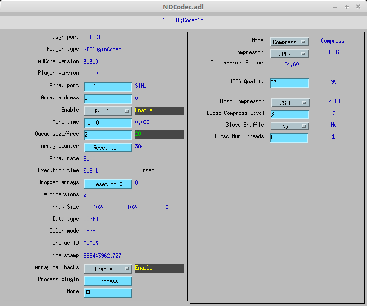

NDCodec performance with ~1280 32-bit frames/s

NDPluginBaseFull.adl showing that NumThreads was set to 2

NDPluginCodec is a tool for compressing and decomppressing NDArray data according
to a user selectable codec. Compression information is stored in the codec
and compressionSize fields of the NDArray.
The new NDArray field codec is used to indicate if an NDArray holds
compressed or uncompressed data.
codec is empty (codec.empty()==true).compressedSize is equal to dataSize.codec holds the name of the codec that was used to compress the data.
This plugin currently supports two codecs: "jpeg" and "blosc". compressedSize holds the length of the compressed data in pData.
dataSize holds the length of the allocated pData buffer,
as usual. pData holds the compressed data as unsigned char.
dataType holds the data type of the compressed data. This
will be used for decompression. To compress the data, the Mode parameter must be set to Compress. Also, the parameter Compressor must be set to something other than None. After the compression is done, the CompFactor parameter will be updated with the compression factor achieved. CompFactor is calculated according to the following formula:
dataSize/compressedSize
Currently, three choices are available for the Compressor parameter:
pData
will contain a full, valid JPEG file in memory after the compression is done. JPEG
compression is controlled with the following parameters:
Note that BloscNumThreads controls the number of threads created from a single NDPluginCodec thread. The performance of both the JPEG and Blosc compressors can also be increased by running multiple NDPluginCodec threads within a single plugin instance. This is controlled with the NumThreads record, as for most other plugins.
It is important to note that plugins downstream of NDCodec that are receiving compressed
NDArrays must have been constructed with NDPluginDriver's compressionAware=true,
otherwise compressed arrays will be dropped by them at runtime. Currently
only NDPluginCodec and NDPluginPva are able to handle compressed NDArrays.
If Mode is set to Decompress, decompression happens automatically and transparently if the codec is supported. No other parameter needs to be set for the decompression to work.
NDPluginCodec inherits from NDPluginDriver. The NDPluginCodec class documentation describes this class in detail.
NDPluginCodec defines the following parameters. It also implements all of the standard plugin parameters from NDPluginDriver. The EPICS database NDCodec.template provides access to these parameters, listed in the following table.
| Parameter Definitions in NDPluginCodec.h and EPICS Record Definitions in NDCodec.template | ||||||
| Parameter index variable | asyn interface | Access | Description | drvInfo string | EPICS record name | EPICS record type |
|---|---|---|---|---|---|---|
| NDCodecMode | asynInt32 | r/w | The plugin mode (NDCodecMode_t). | MODE |
$(P)$(R)Mode $(P)$(R)Mode_RBV |
mbbo mbbi |
| NDCodecCompressor | asynInt32 | r/w | Which compressor to use (NDCodecCompressor_t). | COMPRESSOR |
$(P)$(R)Compressor $(P)$(R)Compressor_RBV |
mbbo mbbi |
| NDCodecCompFactor | asynFloat64 | r/w | Compression factor. | COMP_FACTOR | $(P)$(R)CompFactor | ai |
| Parameters for the JPEG Compressor | ||||||
| NDCodecJPEGQuality | asynInt32 | r/w | JPEG compression quality. | JPEG_QUALITY |
$(P)$(R)JPEGQuality $(P)$(R)JPEGQuality_RBV |
longout longin |
| Parameters for the Blosc Compressor | ||||||
| NDCodecBloscCompressor | asynInt32 | r/w | Which Blosc compressor to use (NDCodecBloscComp_t). | BLOSC_COMPRESSOR |
$(P)$(R)BloscCompressor $(P)$(R)BloscCompressor_RBV |
mbbo mbbi |
| NDCodecBloscCLevel | asynInt32 | r/w | Blosc compression level. | BLOSC_CLEVEL |
$(P)$(R)BloscCLevel $(P)$(R)BloscCLevel_RBV |
longout longin |
| NDCodecBloscShuffle | asynInt32 | r/w |
Blosc shuffle data before compression:
|
BLOSC_SHUFFLE |
$(P)$(R)BloscShuffle $(P)$(R)BloscShuffle_RBV |
mbbo mbbi |
| NDCodecBloscNumThreads | asynInt32 | r/w | Blosc number of threads for compression/decompression. | BLOSC_NUMTHREADS |
$(P)$(R)BloscNumThreads $(P)$(R)BloscNumThreads_RBV |
longout longin |
| Parameters for Diagnostics | ||||||
| NDCodecCodecStatus | asynInt32 | r/o | Status of the compression/decompression. Values are "Success", "Warning", and "Error". | CODEC_STATUS | $(P)$(R)CodecStatus | mbbi |
| NDCodecCodecError | asynOctet | r/o | Error message if CodecStatus is "Warning" or "Error". | CODEC_ERROR | $(P)$(R)CodecError | waveform |
The NDPluginCodec plugin is created with the following command, either from C/C++ or from the EPICS IOC shell.
int NDCodecConfigure(const char *portName, int queueSize, int blockingCallbacks,
const char *NDArrayPort, int NDArrayAddr,
int maxBuffers, size_t maxMemory,
int priority, int stackSize)
For details on the meaning of the parameters to this function refer to the detailed documentation on the NDCodecConfigure function in the NDPluginCodec.cpp documentation and in the documentation for the constructor for the NDPluginCodec class.
The following is the MEDM screen that provides access to the parameters in NDPluginDriver.h and NDPluginCodec.h through records in NDPluginBase.template and NDCodec.template.

The following screens show the performance that can be achieved with NDPluginCodec. For this test the simDetector driver was generating 1024x1024 UInt32 arrays at ~1280 arrays/s. These were compressed using Blosc LZ4 compression with Bit shuffle and 6 Blosc threads. The compression factor was ~42, so the output arrays were 25 KB, compared to the input size of 1 MB. When running with a single plugin thread (NumThreads=1) the plugin sometimes could not keep up. By increasing numThreads to 2 the plugin could always process the full 1280 arrays/s without dropping any arrays. The test was run on a 20-core Linux machine, and the simDetector IOC was using ~7 cores. NDPluginCodec was using ~6 of these. Since each array is 4 MB, this is a compression rate of ~5.0 GB/s, or about 5 times the capacity of 10 Gbit Ethernet.